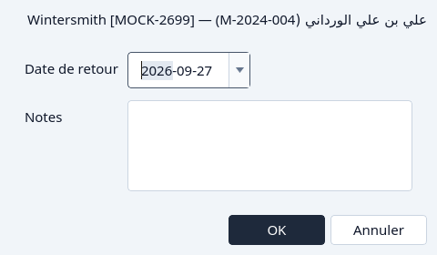
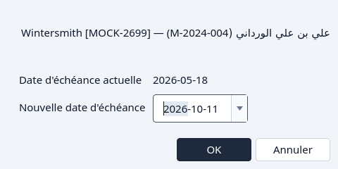
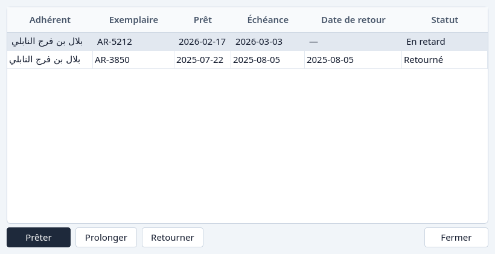

Retourner ou prolonger
Ramener un exemplaire, ou donner plus de jours au prêt.
Retourner et Prolonger ne sont disponibles que tant que le prêt est encore sorti. Un prêt retourné ne les propose plus. La colonne d'état dit déjà pourquoi.
Depuis la Circulation
Surlignez le prêt. Un prêt ouvert ou en retard peut être retourné ou prolongé.
Cliquez Retourner.
La fenêtre montre le prêt et demande le jour où il est revenu. Ce jour ne peut pas être après aujourd'hui.

Retourner. OK marque le prêt Retourné et l'exemplaire disponible. Annuler le laisse sorti.
Cliquez Prolonger.
La fenêtre propose un jour dû après le jour actuel. Le nouveau jour doit être plus tard que le jour dû que le prêt a déjà.

Prolonger.


Depuis une fenêtre de prêts
Le bouton Prêts d'un titre ou d'un adhérent liste cet historique. Surlignez le prêt qui est encore sorti. Prolonger et Retourner suivent cette ligne, et ils sont gris sur un prêt retourné.


Et si…
- Le jour de retour est après aujourd'hui. Choisissez aujourd'hui ou un jour plus tôt.
- Le nouveau jour dû n'est pas après le jour dû actuel. Choisissez un jour plus tard.
- Le prêt est déjà Retourné. Retourner et prolonger restent indisponibles. Supprimer peut l'archiver. Voir Retirer.